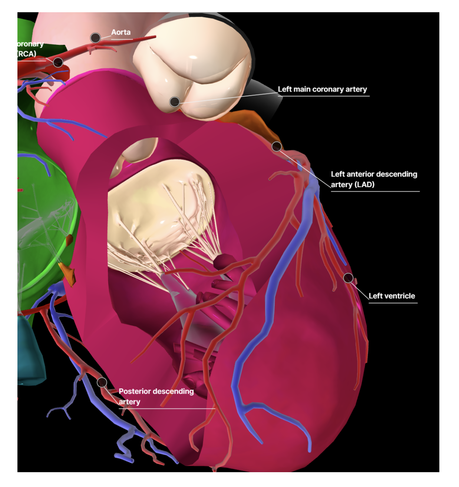
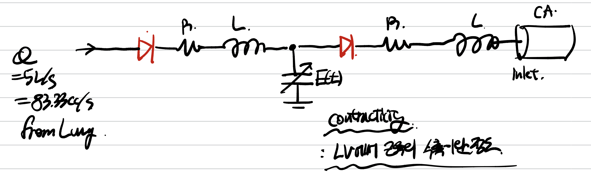
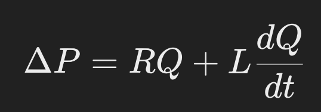
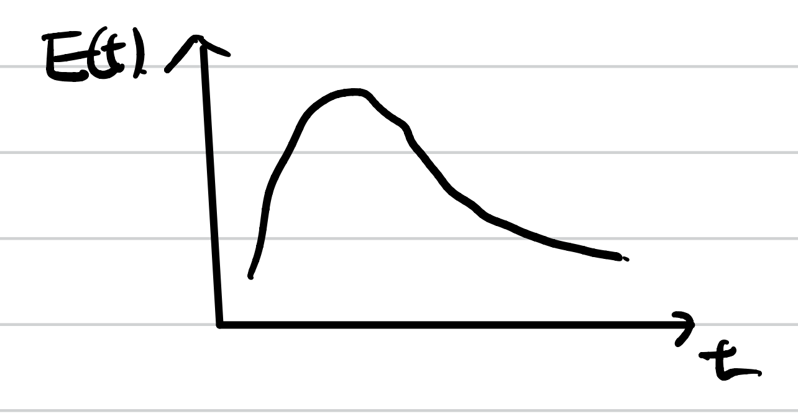

---
{
"layout": "note",
"title": "Lumped Parameter modeling_ coronary artery inlet boundary condition",
"journal": true,
"section": "Study",
"topic": "Blood Flow and Metabolism",
"excerpt": "Lumped Parameter modeling_ coronary artery inlet boundary condition 지난시간까지 Coronary Artery에 대해서 살펴보았고, 이제 관상동맥 혈액유동을 분석해보자. 유동분석을 ",
"classes": "wide",
"permalink": "/blog/biomechanics/blood-flow-and-metabolism/lumped-parameter-modeling-coronary-artery-inlet-boundary-condition/",
"study_area": "Mechanical",
"date": "2024-11-02",
"source_url": "https://jeffdissel.tistory.com/m/122",
"header": {
"teaser": "/blog/biomechanics/blood-flow-and-metabolism/lumped-parameter-modeling-coronary-artery-inlet-boundary-condition/images/img-001.png"
}
}
---
{% raw %}Lumped Parameter modeling_ coronary artery inlet boundary condition
지난시간까지
Coronary Artery에 대해서 살펴보았고,
이제
관상동맥 혈액유동을 분석해보자.
유동분석을 쉽게 묘사하는 modeling 방법인 바로
Lumped parameter method
(혈액유동을 간략하게 묘사하기 위해,
전기회로로 표현하는 방식)
관상동맥으로 혈액이 공급되는 과정을 지난 혈액순환 과정에서 살펴보았듯이,
Lung -> Left Antrium -> Left ventricle -> Aorta
로 이어 진다.

중요한 것은 역류 방지를 위한 두개의 valve가 이 사이에 존재한다.
Mitral Valve, Aorta Valve (위 그림 살구색)
혈액 유동 순서
이를 Lumped Parameter model로 표현하게 되면,
다음과 같이 표현 할 수 있다.

왜 이렇게 표현 되는지를 천천히 살펴보자.
폐부터 시작해보자.
폐로부터 나오는 혈액의 Flow rate는
5L/s (83.33cc/s)로 일정하다는 것은 임상적으로 증명되었다.
이후, Mitral valve는 역류를 허용 하지 않기 때문에,
전기회로의 다이오드와 똑같이 역방향의 전류를 허용하지 않는다.
valve를 통과한 혈액의 유동은
심실의 3가지 요소에 의해 결정된다.
1. Resistance(R)
R =
ΔP/Q
혈액의 유동과 벽과의 마찰로 인한,
압력손실은 단순하게 Q와 비례하다고 표현 할 수 있다.
2. Inductance(L)
혈액의 관성을 표현하는 방법이다.
쉽게 생각해보자.
3m/s 로 흐르고 있는 혈액을 5m/s 로 만들기 위해서는
5m/s로 흐르기 위한 inlet, outlet 혈관의 압력차이만 부여해주면 될까?
아니다, 혈액의 관성으로 3m/s로 계속해서 유지하려는 힘이 존재하기 때문에 이를 위해서
더 강력한 압력차이를 부여해주어야 한다.
방금한 설명을 수식으로 나타내면 다음과 같다.
Resistance에 의한 압력차이보다, 혈액의 관성을 고려한 압력차이를
주어야 우리가 원하는 유동이 흐르게 되는 것이다.

3. �Contractility: E(t)
이는 Left ventricle 의 근유의 수축 이완 정도를 나타낸다.

그래프의 형태는 무조건 모든 인간이 다음과 같으며,
Maxium E(t)의 경우는 사람마다 다르다.
이후 똑같이 Aorta Valve를 지나,
목표하는 관상동맥까지 혈액의 유동의
저항, Inductanc까지 고려해주면
우리가 원하는 Inlet condition을 유도할 수 있게 된다.{% endraw %}